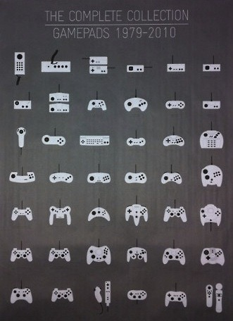

Sat, 20 Nov 2010 05:30:00 · games · video games · design
30 Years of Video Game Controller Evolution

For extra evolution awesomeness, see here.
Sat, 20 Nov 2010 05:30:00 · games · video games · design

For extra evolution awesomeness, see here.